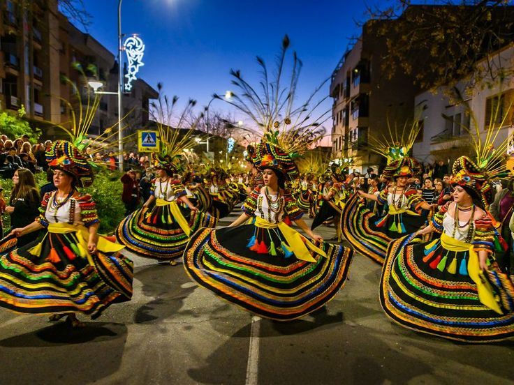
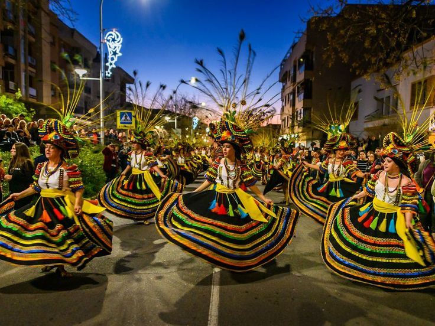

Origins of Dinagyang
The Dinagyang Festival began in 1967 to honor the Santo Niño, following the example set by Cebu’s Sinulog. It grew to embrace Iloilo’s unique cultural flavor over the years.

The Dinagyang Festival is a world-renowned religious and cultural festival held in Iloilo City. It celebrates the arrival of Malay settlers and the spread of Christianity through devotion to the Santo Niño. Its spectacular street performances highlight the vibrant spirit and creativity of the Ilonggos.
Dinagyang honors the rich history of Malay arrival and Filipino Christianization through vibrant street presentations.
Contingents perform synchronized choreographies combining dance, drumbeats, and theatrical storytelling on the streets.
Religious fervor is at the festival’s heart, with ceremonies and processions venerating the Holy Child of Jesus.
Participants wear extravagant costumes, body paint, and tribal accessories representing Iloilo’s creativity and culture.
The lively drumbeats, anthems, and chants fuel the infectious energy of performers and spectators alike.
Dinagyang has won multiple national and international awards for its excellence in cultural presentation and tourism promotion.
The festival features religious solemnity and cultural pageantry, including the Fluvial Procession, the Kasadyahan Cultural Parade, and the Dinagyang Ati Tribe Competition, captivating both local and foreign audiences.
 

The Dinagyang Festival began in 1967 to honor the Santo Niño, following the example set by Cebu’s Sinulog. It grew to embrace Iloilo’s unique cultural flavor over the years.

The devotion to the Santo Niño is deeply intertwined with Dinagyang's colorful festivities, symbolizing gratitude and hope among Ilonggos.
Ati Tribe warriors compete in dance dramas portraying historic, mythical, and cultural tales through dazzling performances and precise movements.
Dinagyang showcases the diversity of Iloilo’s people, merging ethnic, Catholic, and modern Filipino traditions into a mesmerizing spectacle.